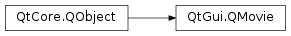

QMovie¶
Synopsis¶
Functions¶
- def
backgroundColor() - def
cacheMode() - def
currentFrameNumber() - def
currentImage() - def
currentPixmap() - def
device() - def
fileName() - def
format() - def
frameCount() - def
frameRect() - def
isValid() - def
jumpToFrame(frameNumber) - def
lastError() - def
lastErrorString() - def
loopCount() - def
nextFrameDelay() - def
scaledSize() - def
setBackgroundColor(color) - def
setCacheMode(mode) - def
setDevice(device) - def
setFileName(fileName) - def
setFormat(format) - def
setScaledSize(size) - def
speed() - def
state()
Slots¶
- def
jumpToNextFrame() - def
setPaused(paused) - def
setSpeed(percentSpeed) - def
start() - def
stop()
Signals¶
- def
error(error) - def
finished() - def
frameChanged(frameNumber) - def
resized(size) - def
started() - def
stateChanged(state) - def
updated(rect)
Static functions¶
- def
supportedFormats()
Detailed Description¶
The
PySide2.QtGui.QMovieclass is a convenience class for playing movies withPySide2.QtGui.QImageReader.This class is used to show simple animations without sound. If you want to display video and media content, use the Qt Multimedia multimedia framework instead.
First, create a
PySide2.QtGui.QMovieobject by passing either the name of a file or a pointer to aPySide2.QtCore.QIODevicecontaining an animated image format toPySide2.QtGui.QMovie‘s constructor. You can callPySide2.QtGui.QMovie.isValid()to check if the image data is valid, before starting the movie. To start the movie, callPySide2.QtGui.QMovie.start().PySide2.QtGui.QMoviewill enterRunningstate, and emitPySide2.QtGui.QMovie.started()andPySide2.QtGui.QMovie.stateChanged(). To get the current state of the movie, callPySide2.QtGui.QMovie.state().To display the movie in your application, you can pass your
PySide2.QtGui.QMovieobject toQLabel.setMovie(). Example:label = QLabel() movie = QMovie("animations/fire.gif") label.setMovie(movie) movie.start()Whenever a new frame is available in the movie,
PySide2.QtGui.QMoviewill emitPySide2.QtGui.QMovie.updated(). If the size of the frame changes,PySide2.QtGui.QMovie.resized()is emitted. You can callPySide2.QtGui.QMovie.currentImage()orPySide2.QtGui.QMovie.currentPixmap()to get a copy of the current frame. When the movie is done,PySide2.QtGui.QMovieemitsPySide2.QtGui.QMovie.finished(). If any error occurs during playback (i.e, the image file is corrupt),PySide2.QtGui.QMoviewill emitPySide2.QtGui.QMovie.error().You can control the speed of the movie playback by calling
PySide2.QtGui.QMovie.setSpeed(), which takes the percentage of the original speed as an argument. Pause the movie by callingPySide2.QtGui.QMovie.setPaused()(true).PySide2.QtGui.QMoviewill then enterPausedstate and emitPySide2.QtGui.QMovie.stateChanged(). If you callPySide2.QtGui.QMovie.setPaused()(false),PySide2.QtGui.QMoviewill reenterRunningstate and start the movie again. To stop the movie, callPySide2.QtGui.QMovie.stop().Certain animation formats allow you to set the background color. You can call
PySide2.QtGui.QMovie.setBackgroundColor()to set the color, orPySide2.QtGui.QMovie.backgroundColor()to retrieve the current background color.
PySide2.QtGui.QMovie.currentFrameNumber()returns the sequence number of the current frame. The first frame in the animation has the sequence number 0.PySide2.QtGui.QMovie.frameCount()returns the total number of frames in the animation, if the image format supports this. You can callPySide2.QtGui.QMovie.loopCount()to get the number of times the movie should loop before finishing.PySide2.QtGui.QMovie.nextFrameDelay()returns the number of milliseconds the current frame should be displayed.
PySide2.QtGui.QMoviecan be instructed to cache frames of an animation by callingPySide2.QtGui.QMovie.setCacheMode().Call
PySide2.QtGui.QMovie.supportedFormats()for a list of formats thatPySide2.QtGui.QMoviesupports.
-
class
PySide2.QtGui.QMovie(device[, format=QByteArray()[, parent=nullptr]])¶ -
class
PySide2.QtGui.QMovie([parent=nullptr]) -
class
PySide2.QtGui.QMovie(fileName[, format=QByteArray()[, parent=nullptr]]) Parameters: - format –
PySide2.QtCore.QByteArray - device –
PySide2.QtCore.QIODevice - parent –
PySide2.QtCore.QObject - fileName – unicode
Constructs a
PySide2.QtGui.QMovieobject.PySide2.QtGui.QMoviewill use read image data fromdevice, which it assumes is open and readable. Ifformatis not empty,PySide2.QtGui.QMoviewill use the image formatformatfor decoding the image data. Otherwise,PySide2.QtGui.QMoviewill attempt to guess the format.The
parentobject is passed toPySide2.QtCore.QObject‘s constructor.Constructs a
PySide2.QtGui.QMovieobject, passing theparentobject toPySide2.QtCore.QObject‘s constructor.See also
PySide2.QtGui.QMovie.setFileName()PySide2.QtGui.QMovie.setDevice()PySide2.QtGui.QMovie.setFormat()Constructs a
PySide2.QtGui.QMovieobject.PySide2.QtGui.QMoviewill use read image data fromfileName. Ifformatis not empty,PySide2.QtGui.QMoviewill use the image formatformatfor decoding the image data. Otherwise,PySide2.QtGui.QMoviewill attempt to guess the format.The
parentobject is passed toPySide2.QtCore.QObject‘s constructor.- format –
-
PySide2.QtGui.QMovie.MovieState¶ This enum describes the different states of
PySide2.QtGui.QMovie.Constant Description QMovie.NotRunning The movie is not running. This is PySide2.QtGui.QMovie‘s initial state, and the state it enters afterPySide2.QtGui.QMovie.stop()has been called or the movie is finished.QMovie.Paused The movie is paused, and PySide2.QtGui.QMoviestops emittingPySide2.QtGui.QMovie.updated()orPySide2.QtGui.QMovie.resized(). This state is entered after calling pause() orPySide2.QtGui.QMovie.setPaused()(true). The current frame number it kept, and the movie will continue with the next frame when unpause() orPySide2.QtGui.QMovie.setPaused()(false) is called.QMovie.Running The movie is running.
-
PySide2.QtGui.QMovie.CacheMode¶ This enum describes the different cache modes of
PySide2.QtGui.QMovie.Constant Description QMovie.CacheNone No frames are cached (the default). QMovie.CacheAll All frames are cached.
-
PySide2.QtGui.QMovie.backgroundColor()¶ Return type: PySide2.QtGui.QColorReturns the background color of the movie. If no background color has been assigned, an invalid
PySide2.QtGui.QColoris returned.
-
PySide2.QtGui.QMovie.cacheMode()¶ Return type: PySide2.QtGui.QMovie.CacheModeSee also
-
PySide2.QtGui.QMovie.currentFrameNumber()¶ Return type: PySide2.QtCore.intReturns the sequence number of the current frame. The number of the first frame in the movie is 0.
-
PySide2.QtGui.QMovie.currentImage()¶ Return type: PySide2.QtGui.QImageReturns the current frame as a
PySide2.QtGui.QImage.
-
PySide2.QtGui.QMovie.currentPixmap()¶ Return type: PySide2.QtGui.QPixmapReturns the current frame as a
PySide2.QtGui.QPixmap.
-
PySide2.QtGui.QMovie.device()¶ Return type: PySide2.QtCore.QIODeviceReturns the device
PySide2.QtGui.QMoviereads image data from. If no device has currently been assigned, 0 is returned.
-
PySide2.QtGui.QMovie.error(error)¶ Parameters: error – PySide2.QtGui.QImageReader.ImageReaderError
-
PySide2.QtGui.QMovie.fileName()¶ Return type: unicode Returns the name of the file that
PySide2.QtGui.QMoviereads image data from. If no file name has been assigned, or if the assigned device is not a file, an emptyPySide2.QtCore.QStringis returned.
-
PySide2.QtGui.QMovie.finished()¶
-
PySide2.QtGui.QMovie.format()¶ Return type: PySide2.QtCore.QByteArrayReturns the format that
PySide2.QtGui.QMovieuses when decoding image data. If no format has been assigned, an empty QByteArray() is returned.See also
-
PySide2.QtGui.QMovie.frameChanged(frameNumber)¶ Parameters: frameNumber – PySide2.QtCore.int
-
PySide2.QtGui.QMovie.frameCount()¶ Return type: PySide2.QtCore.intReturns the number of frames in the movie.
Certain animation formats do not support this feature, in which case 0 is returned.
-
PySide2.QtGui.QMovie.frameRect()¶ Return type: PySide2.QtCore.QRectReturns the rect of the last frame. If no frame has yet been updated, an invalid
PySide2.QtCore.QRectis returned.
-
PySide2.QtGui.QMovie.isValid()¶ Return type: PySide2.QtCore.boolReturns
trueif the movie is valid (e.g., the image data is readable and the image format is supported); otherwise returnsfalse.For information about why the movie is not valid, see
PySide2.QtGui.QMovie.lastError().
-
PySide2.QtGui.QMovie.jumpToFrame(frameNumber)¶ Parameters: frameNumber – PySide2.QtCore.intReturn type: PySide2.QtCore.boolJumps to frame number
frameNumber. Returnstrueon success; otherwise returnsfalse.
-
PySide2.QtGui.QMovie.jumpToNextFrame()¶ Return type: PySide2.QtCore.boolJumps to the next frame. Returns
trueon success; otherwise returnsfalse.
-
PySide2.QtGui.QMovie.lastError()¶ Return type: PySide2.QtGui.QImageReader.ImageReaderErrorReturns the most recent error that occurred while attempting to read image data.
-
PySide2.QtGui.QMovie.lastErrorString()¶ Return type: unicode Returns a human-readable representation of the most recent error that occurred while attempting to read image data.
See also
-
PySide2.QtGui.QMovie.loopCount()¶ Return type: PySide2.QtCore.intReturns the number of times the movie will loop before it finishes. If the movie will only play once (no looping), returns 0. If the movie loops forever, returns -1.
Note that, if the image data comes from a sequential device (e.g. a socket),
PySide2.QtGui.QMoviecan only loop the movie if thePySide2.QtGui.QMovie.cacheMode()is set toQMovie.CacheAll.
-
PySide2.QtGui.QMovie.nextFrameDelay()¶ Return type: PySide2.QtCore.intReturns the number of milliseconds
PySide2.QtGui.QMoviewill wait before updating the next frame in the animation.
-
PySide2.QtGui.QMovie.resized(size)¶ Parameters: size – PySide2.QtCore.QSize
-
PySide2.QtGui.QMovie.scaledSize()¶ Return type: PySide2.QtCore.QSizeReturns the scaled size of frames.
-
PySide2.QtGui.QMovie.setBackgroundColor(color)¶ Parameters: color – PySide2.QtGui.QColorFor image formats that support it, this function sets the background color to
color.
-
PySide2.QtGui.QMovie.setCacheMode(mode)¶ Parameters: mode – PySide2.QtGui.QMovie.CacheModeSee also
-
PySide2.QtGui.QMovie.setDevice(device)¶ Parameters: device – PySide2.QtCore.QIODeviceSets the current device to
device.PySide2.QtGui.QMoviewill read image data from this device when the movie is running.
-
PySide2.QtGui.QMovie.setFileName(fileName)¶ Parameters: fileName – unicode Sets the name of the file that
PySide2.QtGui.QMoviereads image data from, tofileName.
-
PySide2.QtGui.QMovie.setFormat(format)¶ Parameters: format – PySide2.QtCore.QByteArraySets the format that
PySide2.QtGui.QMoviewill use when decoding image data, toformat. By default,PySide2.QtGui.QMoviewill attempt to guess the format of the image data.You can call
PySide2.QtGui.QMovie.supportedFormats()for the full list of formatsPySide2.QtGui.QMoviesupports.
-
PySide2.QtGui.QMovie.setPaused(paused)¶ Parameters: paused – PySide2.QtCore.boolIf
pausedis true,PySide2.QtGui.QMoviewill enterPausedstate and emitPySide2.QtGui.QMovie.stateChanged()(Paused); otherwise it will enterRunningstate and emitPySide2.QtGui.QMovie.stateChanged()(Running).See also
-
PySide2.QtGui.QMovie.setScaledSize(size)¶ Parameters: size – PySide2.QtCore.QSizeSets the scaled frame size to
size.
-
PySide2.QtGui.QMovie.setSpeed(percentSpeed)¶ Parameters: percentSpeed – PySide2.QtCore.intSee also
-
PySide2.QtGui.QMovie.speed()¶ Return type: PySide2.QtCore.intSee also
-
PySide2.QtGui.QMovie.start()¶ Starts the movie.
PySide2.QtGui.QMoviewill enterRunningstate, and start emittingPySide2.QtGui.QMovie.updated()andPySide2.QtGui.QMovie.resized()as the movie progresses.If
PySide2.QtGui.QMovieis in thePausedstate, this function is equivalent to callingPySide2.QtGui.QMovie.setPaused()(false). IfPySide2.QtGui.QMovieis already in theRunningstate, this function does nothing.
-
PySide2.QtGui.QMovie.started()¶
-
PySide2.QtGui.QMovie.state()¶ Return type: PySide2.QtGui.QMovie.MovieStateReturns the current state of
PySide2.QtGui.QMovie.See also
QMovie.MovieStatePySide2.QtGui.QMovie.stateChanged()
-
PySide2.QtGui.QMovie.stateChanged(state)¶ Parameters: state – PySide2.QtGui.QMovie.MovieState
-
PySide2.QtGui.QMovie.stop()¶ Stops the movie.
PySide2.QtGui.QMovieentersNotRunningstate, and stops emittingPySide2.QtGui.QMovie.updated()andPySide2.QtGui.QMovie.resized(). IfPySide2.QtGui.QMovie.start()is called again, the movie will restart from the beginning.If
PySide2.QtGui.QMovieis already in theNotRunningstate, this function does nothing.
-
static
PySide2.QtGui.QMovie.supportedFormats()¶ Return type: Returns the list of image formats supported by
PySide2.QtGui.QMovie.See also
-
PySide2.QtGui.QMovie.updated(rect)¶ Parameters: rect – PySide2.QtCore.QRect
© 2018 The Qt Company Ltd. Documentation contributions included herein are the copyrights of their respective owners. The documentation provided herein is licensed under the terms of the GNU Free Documentation License version 1.3 as published by the Free Software Foundation. Qt and respective logos are trademarks of The Qt Company Ltd. in Finland and/or other countries worldwide. All other trademarks are property of their respective owners.